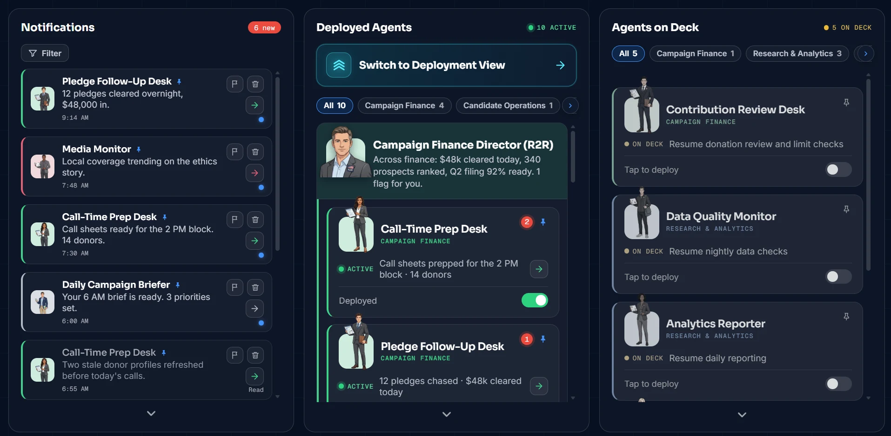
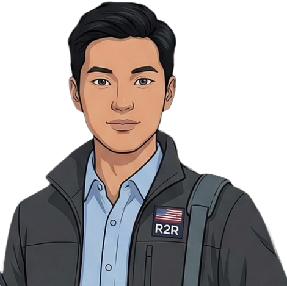

Compliance Filing Assistant
Campaign Finance
1
Deployed
The next generation of public leaders is here.
Your team is ready when you are…
See How We Work What We Stand ForYou run the politics, we run the operation.
Hire agents, plug-in campaign tools, activate and dominate the campaign trail.
Your AI Campaign Headquarters, so your positions are never compromised by your budget.
To advance the democratic experiment with evolving technologies to elect the next generation of leaders for the public interest.
The next generation isn't defined by age or by status. It's defined by character and democratic values. Sometimes that leader is already in office. Sometimes they haven't filed yet. Either way, they deserve a campaign that lets them say what they stand for.
Most public servants entered politics to serve the public interest. We believe most still do.
But campaigns today are prohibitively expensive, and the funds have to come from somewhere. So every leader, however principled, inherits the same equation:
When stepping back risks handing the public's business to whoever can out-raise you, holding on is the responsible play.
Today's leaders aren't failing the public. They're making the best decisions available inside a bad equation.
That is a condition. And conditions can be changed.
research · drafting · monitoring · compliance · donor preparation · field coordination.
To stay in office and make policy, a leader first has to fund a campaign.
So policy positions align to fit the fundraising, not the purpose. Not because leaders are for sale, but because the bill always comes due.
Make the operation affordable, and the bending stops: there's nothing left to compromise for. That's the entire idea.
Ready-to-Run is your AI Campaign Headquarters, built around the necessary roles that have always made campaigns expensive.
It carries the role's responsibilities, stays on the work around the clock, and brings the results to you for approval. You review, you approve, you decide.



Three experience agents come with every team. Their first job is learning you.
Your positions, in your words, become the record every agent works from. Nothing speaks for you that didn't come from you, and nothing about you changes without your consent.
From there, our team guides you through the technical setup, connects your tools, and keeps you current on what matters most, in real time.
Learns your campaign and what you stand for
 Jon LockeTech Operations Lead
Jon LockeTech Operations LeadHelps you set up and operate the platform
Your catch-all for the whole campaign

We hold one bar for every door we open, and it has no party test. We look for public servants who support:
Leaders who carry these values will find a full team behind them here, whether they've served for decades or are running for the first time.
Your team works from sources it can show you. If an agent can't back a claim, it doesn't make the claim.
Every claim your team makes traces to a source you can open. Ask any agent where a fact came from and it shows you. No source, no claim, no exceptions.
Uncertainty is stated and brought to you, never papered over. Your agents answer the question you asked, unwelcome facts included, and flag risk rather than flatter you.
When the evidence is thin, your team says so plainly and brings the question to you instead of guessing around it. Confidence here is earned by the record, not performed for you.
Nothing consequential ships without your approval, and the most sensitive work waits behind the highest gates. The judgment that matters stays human, and it stays yours.
Every consequential action waits on a named human approval, and what you approved is exactly what goes out. The most sensitive work carries the highest gates, and no agent can approve on a human's behalf.
We help campaigns deserve votes, not beg for them. We don't spam voters, that's a losing strategy your opponent can continue to pay for. We run a campaign engine designed to win, pure and simple.
We build for your headquarters, not for the spamming. No persuasion targeting, no synthetic media of real people, no disinformation. Your campaign earns votes here; nothing on this platform manufactures them.
250 years ago, our Founding Fathers staked their lives, fortunes, and sacred honor to launch this democratic experiment. Let us have the courage to advance it together.
~Benjamin Franklin
Every agent you have deployed, on mission under its R2R department director. Skim each director's summary, then dive into the agents doing the work.
Back to Command CenterPick up right where your campaign left off.

Fill out the intake form to request permission to create one. Tell us about your race and we'll stand up your team.

Most people who enter public life mean to serve the public interest, and most still do. But a serious campaign is expensive, and that cost quietly rewrites the job · weigh every position against what it might cost to hold the seat. That isn't a failure of character. It's a bad equation. And an equation can be changed.
To advance the democratic experiment with evolving technologies to elect the next generation of leaders for the public interest.
A modern campaign runs on money, and the money quietly rewrites the positions.
Most of what a campaign raises buys operations, not ideas. Conviction is the cheap part.
Priced so the strength of your case, not the size of your budget, decides whether you can make it.
Hire your team in the Marketplace, run them from your Command Center, and watch the work happen in your Deployment View. You move through three rooms, and your team moves with you · open any one to look inside.
A campaign worth running starts with who you are and what you stand for. Before your team moves on anything, we learn both.
Browse what each agent can do, add the ones you want to your cart, then check out to your Command Center. This is a demo, so no real purchases are made.
Most people who enter public life mean to serve the public interest, and most still do. But a serious campaign is expensive, and that cost quietly rewrites the job · weigh every position against what it might cost to hold the seat. That isn't a failure of character. It's a bad equation. And an equation can be changed.
Hire your team in the Marketplace, run them from your Command Center, and watch the work happen in your Deployment View. Open any room to look inside.
A campaign worth running starts with who you are and what you stand for. Before your team moves on anything, we learn both.
Browse what each agent can do, add the ones you want to your cart, then check out to your Command Center. This is a demo, so no real purchases are made.

Your Campaign Manager pulls everything your team did into one briefing. Jax and I are a tap away. And your timeline keeps the whole race in view.
New pledges, a draft for review, a media flag · it all arrives here first. When you want the field picture, the Switch to Deployment View button up top in Deployed Agents takes you there.
Your Campaign Manager pulls everything your team did into one briefing. Jax and I are a tap away. And your timeline keeps the whole race in view.
New pledges, a draft for review, a media flag · it all arrives here first. When you want the field picture, the Switch to Deployment View button up top in Deployed Agents takes you there.
Welcome to the Deployment View, this is where your agents get their marching orders. Where you place an agent tells it what game to play. Drag an agent between zones to re-scope its work.
Your foundation.
Holding what you've won.
Races are won at the margin.
You came here because the public's business deserves better than positions that answer to a budget. Your team is hired, your headquarters is live, and your field is set · now go run on what you believe.
To advance the democratic experiment with evolving technologies to elect the next generation of leaders for the public interest.
250 years ago, our Founding Fathers staked their lives, fortunes, and sacred honor to launch this democratic experiment. Let us have the courage to advance it together.
A Republic, if you can keep it…
~Benjamin FranklinWelcome to the Deployment View, this is where your agents get their marching orders. Where you place an agent tells it what game to play. Drag an agent between zones to re-scope its work.
You came here because the public's business deserves better than positions that answer to a budget. Your team is hired, your headquarters is live, and your field is set · now go run on what you believe.
To advance the democratic experiment with evolving technologies to elect the next generation of leaders for the public interest.
250 years ago, our Founding Fathers staked their lives, fortunes, and sacred honor to launch this democratic experiment. Let us have the courage to advance it together.
A Republic, if you can keep it…
~Benjamin Franklin